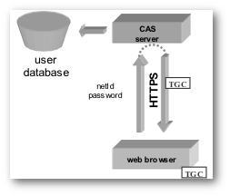
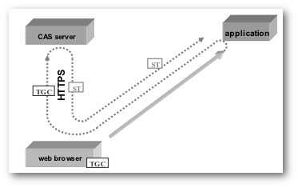
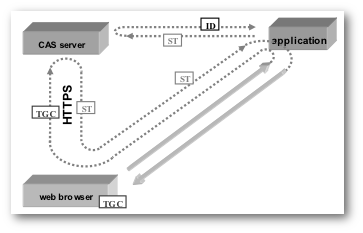

Introduction
The ALA has deployed the Central Authentication Service (version 3.4.2) to provide single sign-on authentication for ALA applications.
A Java web application integrates with CAS by configuring a series of context-params and filters in the application's web.xml. See CAS Java Client v3.1 for details.
If you are impatient go to the sample web.xml code bellow.
CAS Client for Java
Integrating a Java webapp with CAS requires declaring three filters in the order listed (below) in the app's deployment descriptor (web.xml), To provide a finer control over which URIs are subject to the CAS client filters we have provided a URIFilter that uses a list of regular expression patterns to determine the URIs to be authenticated.
Diagrams courtesy of Aubry, Mathieu and Marchal.
Authentication Filter
The Authentication filter determines whether the application user is authenticated or not. This filter redirects to the CAS server and if the user is not authenticated the CAS login page is rendered. If the entered credentials (id & password) are valid CAS redirects back to the client application. When the user is authenticated CAS creates a Ticket Granting Cookie (TGC) which is sent to the browser. If the user is already authenticated then the CAS server transparently redirects back to the calling application.

The TGC is secure (only transmitted to the CAS server via SSL) and opaque (contains no user information). The TGC's name is CASTGC and expires either when the user's browser is closed or after 3 months if the "Remember Me" option was selected on the Login page.
When the CAS server redirects an authenticated user to the calling service (application) a Service Ticket is delivered as a URI parameter. The ST is an opaque one-time ticket that is valid only for the calling application for a short period.

The default behaviour of rendering the CAS login page (if not authenticated) can be disabled by declaring the init-parameter gateway=true. Gateway mode enables the application to make authenticating optional with the provision of a login link. The format of the login URL is https://auth.org.au/cas/login?service=<serviceURL> where serviceURL is the URL of the application web page containing the login link that CAS uses to redirect back to the app.
Ticket Validation Filter
The Ticket Validation Filter validates the Service Ticket via an HTTP request to the CAS server and receives properties of the authenticated user in response.

There are 2 validation filters provided by the CAS Java client:
Cas20ProxyReceivingTicketValidationFilterSaml11TicketValidationFilter
The first uses a simple XML response developed for CAS version 2.0 while the second uses a Security Assertion Markup Language (SAML v1.1) SOAP response.
Both filters work in a simple web app but when trying to configure the Biocache application with the SAML filter there was a conflict with SAX parser dependencies used by the CAS Java client and those of the Biocache app. I recommend using the CAS 2.0 filter for its simplicity.
HttpServletRequestWrapper Filter
The HttpServletRequestWrapper Filter wraps the normal HttpServletRequest with a wrapper that overrides the following methods to provide data from the CAS Assertion:
getUserPrincipal()
Returns a org.jasig.cas.client.authentication.AttributePrincipal that implements getAttributes() that returns user attributes as a Map of key/value pairs. Attribute keys currently returned are:
- authority
- firstname
- lastname
getRemoteUser()
Returns the authenticated user's ID or null if not authenticated.
isUserInRole(String role)
Returns true if the specified role is in the user's authority attribute.
URI Filter
Optional meta filter that provides filtering based on URI patterns that require authentication (and thus redirection) to the CAS server. There are 3 possible filter configurations and these filtering criteria are applied in the following order:
| Criterion | context-param | Required | Description |
|---|---|---|---|
| URI exclusion | uriExclusionFilterPattern | No | URIs that should not be subject to CAS authentication |
| URI inclusion | uriFilterPattern | No | URIs that are to be subject to CAS authentication |
| Only if logged in | authenticateOnlyIfLoggedInFilterPattern | No | URIs that should be subject to CAS authentication only if logged in (indicated by the presence of the ALA-Auth cookie) |
The list of URI patterns is specified as a comma delimited list of regular expressions in a <context-param>.